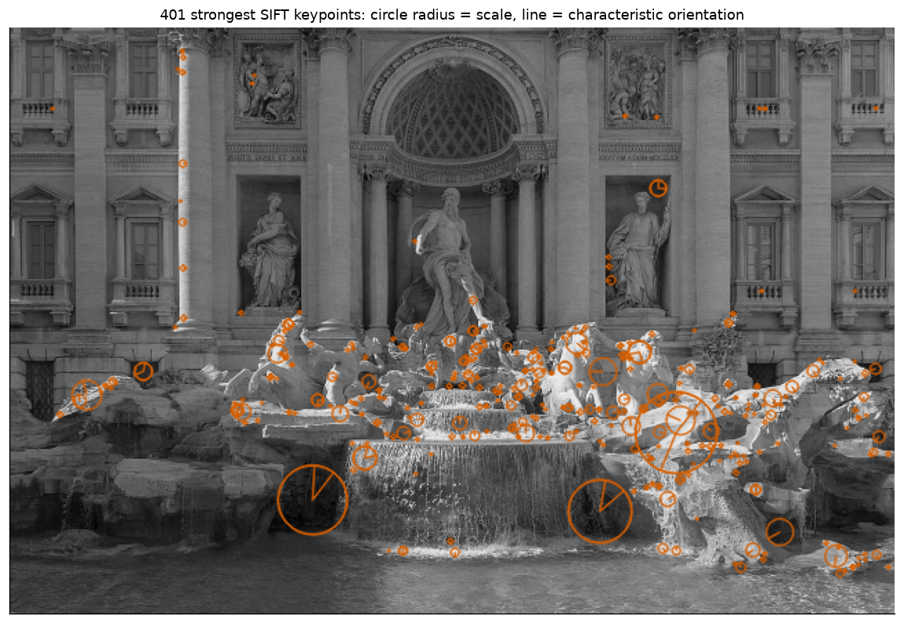
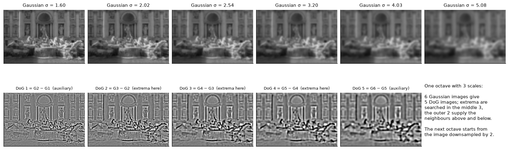
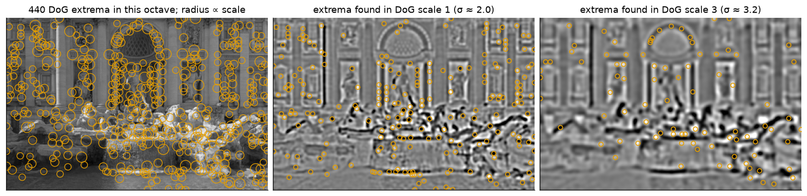
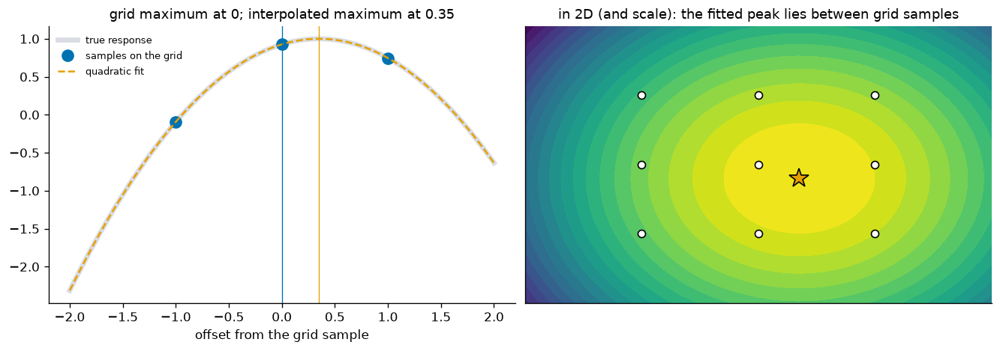
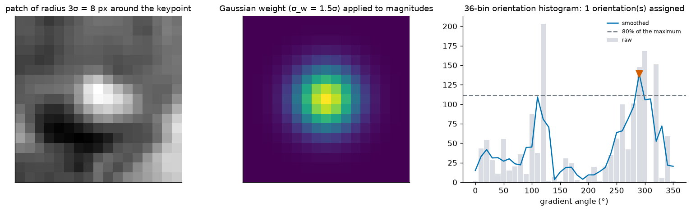
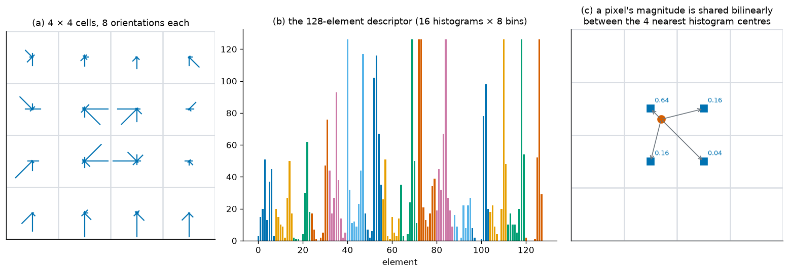
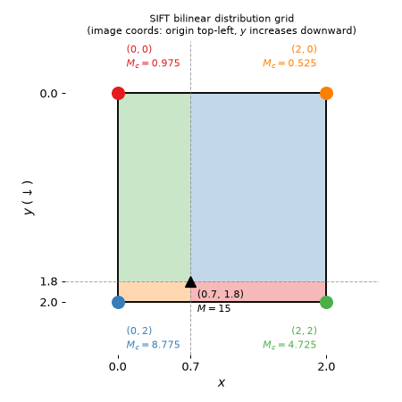
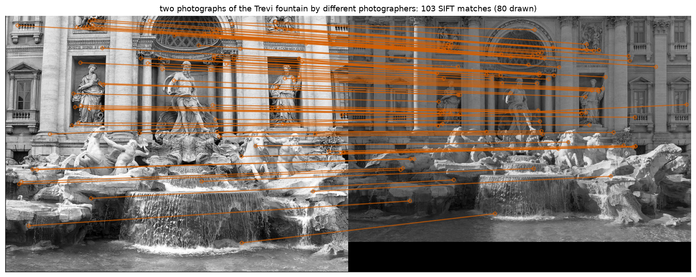

Lesson 03.04
SIFT
The scale-invariant feature transform end to end: a pyramidal DoG scale space, extrema detection and refinement, characteristic orientation, and the 128-element normalised descriptor.
Learning outcomes
After this lesson you should be able to:
- list the four stages of the SIFT algorithm and distinguish its detector from its descriptor;
- describe the pyramidal scale space with octaves, scales and auxiliary scales;
- explain extrema detection, localisation by quadratic interpolation and the rejection of edge responses;
- explain how the characteristic orientation and the 128-element descriptor are formed.
If you have not yet done so, read the supplementary lesson on scale space and image pyramids (Lesson 3.5) before this one.
SIFT at a high level
This lesson follows the detailed article Anatomy of the SIFT method (Rey Otero and Delbracio, 2014); the original algorithm was published by Lowe in 2004. SIFT is perhaps the best known keypoint method in machine vision and produces many high-quality keypoints. It is a combination of a detector and a descriptor; the literature sometimes refers to both parts and sometimes only to the descriptor, which can be applied to any image patch without a detection step. The algorithm has four stages:
- scale-space extrema detection;
- keypoint localisation, including interpolation of position and scale;
- characteristic orientation assignment;
- formation of the normalised descriptor.


Stage 1: the scale space
Unlike the simple scale spaces of the previous lessons, SIFT uses a pyramidal scale space to minimise computation while covering a good range of σ. The input image is first upsampled to form the first octave, and each subsequent octave is formed by downsampling. There are typically five octaves with three scales each. In addition each octave contains three auxiliary scales, needed to construct a difference-of-Gaussians scale space that approximates the Laplacian: with three extra Gaussian images there are enough DoG images for the three principal scales to have neighbours above and below for the extrema search.

Extrema
Extrema are found in the three principal DoG scales of each octave by the 26-neighbour test: 8 neighbours in the same scale and 9 in each of the scales above and below, with the auxiliary scales supplying the outer neighbours. Lowe found three scales per octave optimal for stable keypoints without excessive computation. Two problems remain: the candidates are sensitive to noise, and their positions are constrained to the sampling grid of the octave.

Stage 2: localising the extrema
To overcome the quantisation of positions to the grid, SIFT refines the position and scale of each candidate by local quadratic interpolation: a Taylor expansion fits a continuous quadratic function to the sampled DoG values around the candidate, and the maximum of that function gives the interpolated position and scale. To improve robustness a magnitude threshold removes weak extrema, and an edgeness measure, similar in spirit to the Harris cornerness, rejects candidates that lie on edges.

Stage 3: characteristic orientation
To make the descriptor rotation invariant each keypoint is assigned a characteristic orientation. Over a patch of size $6 \lambda_{ori} \sigma$, where σ is the keypoint's scale and $\lambda_{ori}$ is a factor close to 1, the gradient magnitudes and directions are computed by finite differences. The magnitudes are weighted by a Gaussian of standard deviation $\lambda_{ori} \sigma$ so that pixels far from the keypoint count less, and accumulated into a 36-bin histogram over 0 to 2π, which is then smoothed. Every local maximum within 80% of the global maximum becomes an orientation; a keypoint may therefore receive several descriptors, one per orientation.

Worked example 1: SIFT Orientation Histogram
The following $4 \times 4$ image patch has gradient magnitudes $\mathbf{M}$ and gradient directions $\mathbf{D}$ (in degrees):
$$\mathbf{M} = \begin{bmatrix} 1 & 11 & 7 & 9 \\ 19 & 5 & 11 & 7 \\ 6 & 17 & 4 & 7 \\ 3 & 3 & 6 & 14 \end{bmatrix}$$
$$\mathbf{D} = \begin{bmatrix} 208 & 161 & 61 & 287 \\ 287 & 84 & 21 & 115 \\ 52 & 287 & 187 & 182 \\ 104 & 182 & 348 & 85 \end{bmatrix}$$
Bins are 45° wide: Bin 0 = [0°, 45°), Bin 1 = [45°, 90°), Bin 2 = [90°, 135°), Bin 3 = [135°, 180°), Bin 4 = [180°, 225°), Bin 5 = [225°, 270°), Bin 6 = [270°, 315°), Bin 7 = [315°, 360°).
For each pixel, compute $\text{bin} = \lfloor \text{direction} / 45 \rfloor$ and accumulate its magnitude into that bin.
(a) Build the 8-bin orientation histogram (total magnitude per bin).
(b) Identify the dominant orientation bin.
Show the solution
Step 1 – Bin assignment for each pixel:
| Row | Col | Magnitude | Direction | Bin |
|---|---|---|---|---|
| 0 | 0 | 1 | 208° | 4 |
| 0 | 1 | 11 | 161° | 3 |
| 0 | 2 | 7 | 61° | 1 |
| 0 | 3 | 9 | 287° | 6 |
| 1 | 0 | 19 | 287° | 6 |
| 1 | 1 | 5 | 84° | 1 |
| 1 | 2 | 11 | 21° | 0 |
| 1 | 3 | 7 | 115° | 2 |
| 2 | 0 | 6 | 52° | 1 |
| 2 | 1 | 17 | 287° | 6 |
| 2 | 2 | 4 | 187° | 4 |
| 2 | 3 | 7 | 182° | 4 |
| 3 | 0 | 3 | 104° | 2 |
| 3 | 1 | 3 | 182° | 4 |
| 3 | 2 | 6 | 348° | 7 |
| 3 | 3 | 14 | 85° | 1 |
Step 2 – Histogram summary:
| Bin | Range | Total magnitude |
|---|---|---|
| 0 | [0°, 45°) | 11 |
| 1 | [45°, 90°) | 32 |
| 2 | [90°, 135°) | 10 |
| 3 | [135°, 180°) | 11 |
| 4 | [180°, 225°) | 15 |
| 5 | [225°, 270°) | 0 |
| 6 | [270°, 315°) | 45 |
| 7 | [315°, 360°) | 6 |
Step 3 – Dominant orientation:
Bin 6 ([270°, 315°)) has the highest total: 45
Stage 4: the normalised descriptor
The descriptor captures the local spatial distribution of gradient orientations. A patch of size $2 \lambda_{descr} \sigma$ is taken around the keypoint, so larger keypoints use larger patches. Gradients are computed by finite differences, their directions are normalised relative to the characteristic orientation, and a second Gaussian window of standard deviation $\lambda_{descr} \sigma$ weights the magnitudes. The patch is divided into a 4 × 4 array of cells, each with an 8-bin histogram.
The contribution of each pixel is split bilinearly between the four nearest histograms, according to the pixel's distance from each histogram's centre, and linearly between the two nearest bins within a histogram. The sixteen histograms are concatenated into a 128-element vector, which is then saturated (values capped at 0.2) and renormalised; this gives the descriptor some invariance to illumination.

Worked example 2: SIFT Bilinear Distribution
Note: Image coordinate system is used — the origin is at the top-left, and $y$ increases downward.
In the SIFT descriptor, gradient magnitudes at pixel positions are distributed to nearby spatial histogram bins using bilinear weighting. A pixel at interior position $(x_i, y_j)$ $= (0.7,\, 1.8)$ has gradient magnitude $M = 15$.
Determine the magnitude contribution $M_c$ allocated to each corner of the $2\times 2$ bin grid (see plot).

Each corner $c$ receives a share of $M$ proportional to the area $A_c$ of the sub-rectangle diagonally opposite corner $c$:
$$M_c = M \cdot \frac{A_c}{\displaystyle\sum_c A_c}, \qquad \sum_c A_c = 4$$
Show the solution
Step 1 – Compute the four sub-rectangle areas.
The pixel at $(x_i, y_j)$ divides the $2\times 2$ cell into four rectangles. The area diagonally opposite each corner is:
$A_{(0,0)}$ (top-left, opposite = bottom-right): $A = (2 - 0.7)(2 - 1.8) = 0.26$ $A_{(2,0)}$ (top-right, opposite = bottom-left): $A = 0.7(2 - 1.8) = 0.14$ $A_{(0,2)}$ (bottom-left, opposite = top-right): $A = (2 - 0.7) \cdot 1.8 = 2.34$ $A_{(2,2)}$ (bottom-right, opposite = top-left): $A = 0.7 \cdot 1.8 = 1.26$
Check: $0.26 + 0.14 + 2.34 + 1.26 = 4.0$ ✓
Step 2 – Distribute magnitude $M$ to each corner.
$M = 15$, total area $= 4$:
$M_{(0,0)} = 15 \times 0.26 / 4 = 0.975$ $M_{(2,0)} = 15 \times 0.14 / 4 = 0.525$ $M_{(0,2)} = 15 \times 2.34 / 4 = 8.775$ $M_{(2,2)} = 15 \times 1.26 / 4 = 4.725$
Check: $0.975 + 0.525 + 8.775 + 4.725 = 15.0 = M$ ✓
Summary
SIFT is a very good descriptor because it is invariant to scale (through scale space), to rotation (through the characteristic orientation) and to illumination (through normalisation), and it is robust to viewing-angle changes of up to about 40°. Thanks to the pyramidal scale space its computational cost is low, and the DoG detector finds enough keypoints to match partially occluded objects. Two photographs of the same fountain taken by different people, at different scales, viewpoints and lighting, can be matched keypoint by keypoint. Finally, SIFT descriptors can be computed on any patch: densely sampled descriptors, without a detector, are the input to the bag-of-features method of Section 6.


Check your understanding
1. In what order do the four stages of SIFT occur?
Keypoints are detected as scale-space extrema, refined, given an orientation and finally described.
2. Why does each SIFT octave compute three extra (auxiliary) Gaussian scales?
Extrema are found in three DoG scales per octave; the auxiliary scales supply the outer DoG images used only as neighbours.
3. What does quadratic interpolation achieve in the localisation stage?
A Taylor expansion fits a quadratic to the sampled DoG values and its maximum gives sub-pixel position and scale.
4. A keypoint's orientation histogram has two peaks at 92% and 85% of the maximum. SIFT
Every local peak within 80% of the global maximum becomes a characteristic orientation.
5. The SIFT descriptor has 128 elements because
Sixteen 8-bin histograms are concatenated, then capped at 0.2 and renormalised.
6. Which step gives SIFT some invariance to illumination changes?
Normalisation removes overall gradient scaling caused by brightness changes, and capping limits the effect of saturated gradients.
Practice questions
Question types from the CE6021 question bank that cover this lesson:
sift_bin_lin, sift_orient.
Image credits
- Trevi fountain in Rome, High Contrast, CC BY 3.0 de
- Detail Neptune Trevi fountain Rome Italy, Jebulon, CC0
Other figures are generated from synthetic data by the lesson engines.